我之前也学过连接池技术,而在 Mybatis 中也有连接池技术,但是它采用的是自己的连接池技术。在 Mybatis 的 SqlMapConfig.xml配置文件中,通过\<dataSource type=”pooled”>来实现 Mybatis 中连接池的配置。
另外谈论一下Mybatis的事务控制。
Mybatis 连接池
Mybatis 连接池的分类
在 Mybatis 中我们将它的数据源 dataSource 分为以下几类:
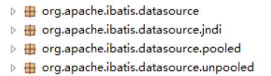
可以看出 Mybatis 将它自己的数据源分为三类:
- UNPOOLED————不使用连接池的数据源
- POOLED—————使用连接池的数据源
- JNDI——————使用 JNDI 实现的数据源
具体的结构是：
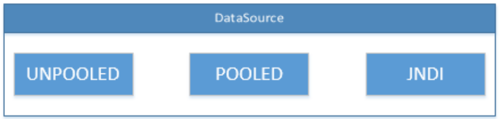
相应地,MyBatis 内部分别定义了实现了 java.sql.DataSource 接口的 UnpooledDataSource,PooledDataSource 类来表示 UNPOOLED、POOLED 类型的数据源。
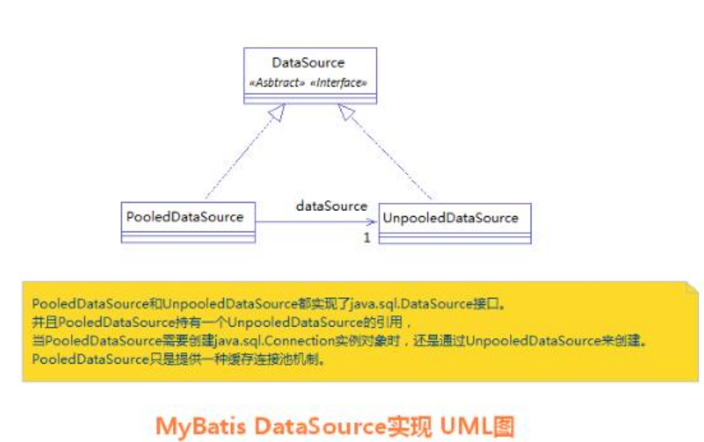在这三种数据源中,我们一般采用的是 POOLED 数据源(很多时候我们所说的数据源就是为了更好的管理数据库连接,也就是我们所说的连接池技术)。
Mybatis 中数据源的配置
我们的数据源配置就是在 SqlMapConfig.xml 文件中,具体配置如下:
<!-- 配置数据源(连接池)信息 -->
<dataSource type="POOLED">
<property name="driver" value="${jdbc.driver}"/>
<property name="url" value="${jdbc.url}"/>
<property name="username" value="${jdbc.username}"/>
<property name="password" value="${jdbc.password}"/>
</dataSource>MyBatis 在初始化时,根据<dataSource>的 type 属性来创建相应类型的的数据源 DataSource,即:type=”POOLED”:MyBatis 会创建PooledDataSource实例type=”UNPOOLED” : MyBatis 会创建UnpooledDataSource实例type=”JNDI”:MyBatis 会从 JNDI 服务上查找 DataSource 实例,然后返回使用
Mybatis 中 DataSource 的存取
MyBatis 是 通 过 工 厂 模 式 来 创 建 数 据 源 DataSource 对 象 的 , MyBatis 定 义 了 抽 象 的 工 厂 接口 :org.apache.ibatis.datasource.DataSourceFactory,通过其 getDataSource()方法返回数据源DataSource。
下面是DataSourceFactory源码,具体如下:
package org.apache.ibatis.datasource;
import java.util.Properties;
import javax.sql.DataSource;
/**
* @author Clinton Begin
*/
public interface DataSourceFactory {
void setProperties(Properties props);
DataSource getDataSource();
}
MyBatis 创建了 DataSource 实例后,会将其放到 Configuration 对象内的Environment 对象中, 供以后使用。
具体分析过程如下:
1.先进入 XMLConfigBuilder 类中,可以找到如下代码:
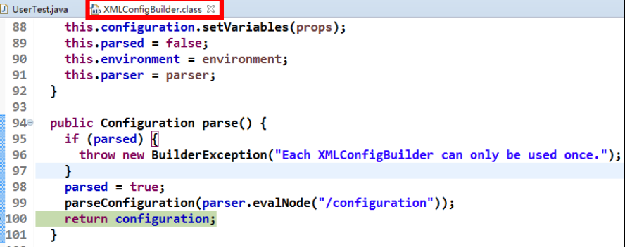
2.分析 configuration 对象的 environment 属性,结果如下:
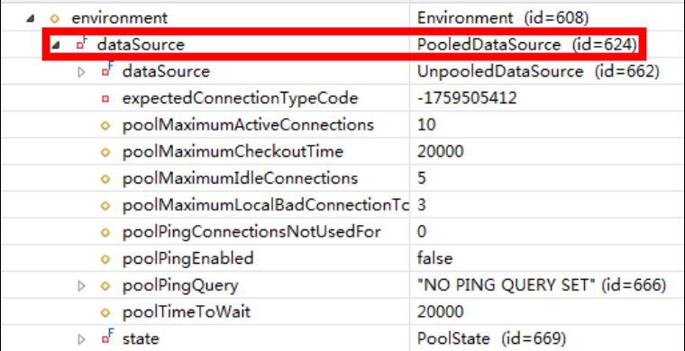
Mybatis 中连接的获取过程分析
当我们需要创建SqlSession 对象并需要执行 SQL 语句时,这时候 MyBatis 才会去调用 dataSource 对象来创建java.sql.Connection 对象。也就是说,java.sql.Connection 对象的创建一直延迟到执行 SQL 语句的时候。
@Test
public void testSql() throws Exception {
InputStream in = Resources.getResourceAsStream("SqlMapConfig.xml");
SqlSessionFactory factory = new SqlSessionFactoryBuilder().build(in);
SqlSession sqlSession = factory.openSession();
List<User> list = sqlSession.selectList("findUserById",41);
System.out.println(list.size());
}只有当第 4 句 sqlSession.selectList("findUserById"),才会触发 MyBatis 在底层执行下面这个方法来创建 java.sql.Connection 对象。
如何证明它的加载过程呢?
我们可以通过断点调试,在 PooledDataSource 中找到如下 popConnection()方法,如下所示:
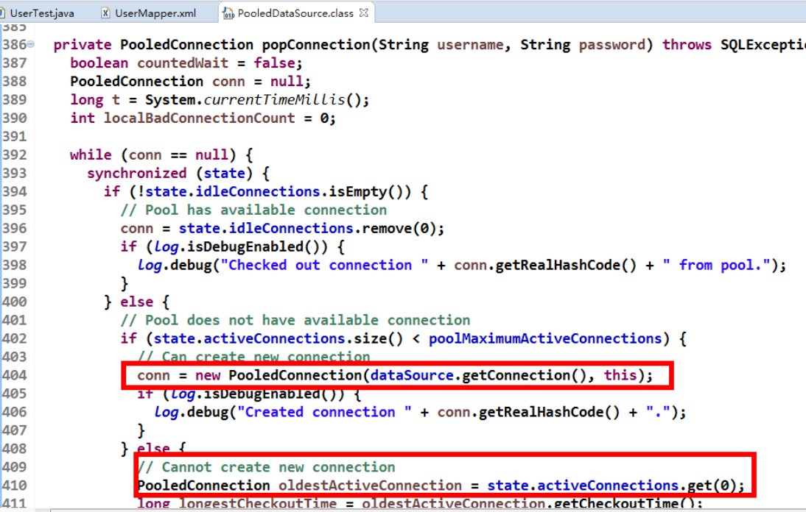
分析源代码,得出 PooledDataSource 工作原理如下:
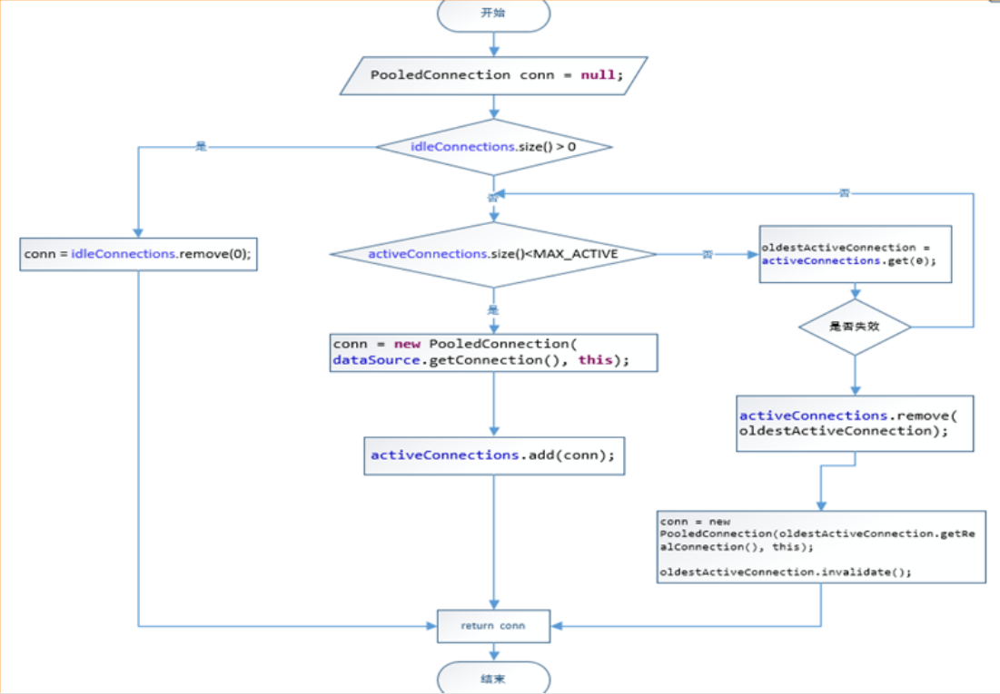
下面是连接获取的源代码:
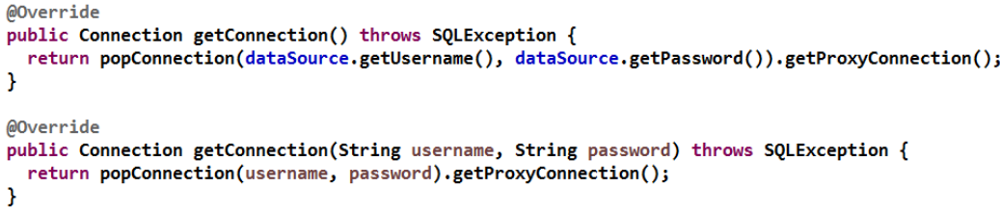
最后我们可以发现,真正连接打开的时间点,只是在我们执行 SQL 语句时,才会进行。其实这样做我们也可以
进一步发现,数据库连接是我们最为宝贵的资源,只有在要用到的时候,才去获取并打开连接,当我们用完了就再
立即将数据库连接归还到连接池中。
JNDI数据源
JNDI：Java Naming and Directory Interface。是SUN公司推出的一套规范，属于JavaEE技术之一。目的是模仿windows系统中的注册表。只能用于javaweb或war
- 在webapp文件下创建META-INF目录
- 在META-INF目录中建立一个名为context.xml的配置文件
?xml version="1.0" encoding="UTF-8"?>
<Context>
<!--
<Resource
name="jdbc/eesy_mybatis" 数据源的名称
type="javax.sql.DataSource" 数据源类型
auth="Container" 数据源提供者
maxActive="20" 最大活动数
maxWait="10000" 最大等待时间
maxIdle="5" 最大空闲数
username="root" 用户名
password="1234" 密码
driverClassName="com.mysql.cj.jdbc.Driver" 驱动类
url="jdbc:mysql://localhost:3306/mybatis" 连接url字符串
/>
-->
<Resource
name="jdbc/eesy_mybatis"
type="javax.sql.DataSource"
auth="Container"
maxActive="20"
maxWait="10000"
maxIdle="5"
username="root"
password="1234"
driverClassName="com.mysql.cj.jdbc.Driver"
url="jdbc:mysql://localhost:3306/eesy_mybatis"
/>
</Context>正确使用sqlmapconfig.xml
<?xml version="1.0" encoding="UTF-8"?>
<!-- 导入约束 -->
<!DOCTYPE configuration
PUBLIC "-//mybatis.org//DTD Config 3.0//EN"
"http://mybatis.org/dtd/mybatis-3-config.dtd">
<configuration>
<typeAliases>
<package name="uestc.zhangkx.domain"></package>
</typeAliases>
<!-- 配置mybatis的环境 -->
<environments default="mysql">
<!-- 配置mysql的环境 -->
<environment id="mysql">
<!-- 配置事务控制的方式 -->
<transactionManager type="JDBC"></transactionManager>
<!-- 配置连接数据库的必备信息 type属性表示是否使用数据源（连接池）-->
<dataSource type="JNDI">
<property name="data_source" value="java:comp/env/jdbc/eesy_mybatis"/>
</dataSource>
</environment>
</environments>
<!-- 指定mapper配置文件的位置 -->
<mappers>
<mapper resource="uestc/zhangkx/dao/IUserDao.xml"/>
</mappers>
</configuration>Mybatis 的事务控制
在 JDBC 中我们可以通过手动方式将事务的提交改为手动方式,通过 setAutoCommit()方法就可以调整。通过 JDK 文档,我们找到该方法如下:
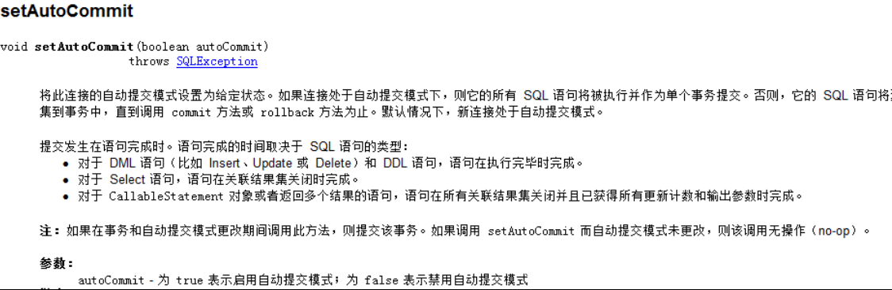
那么我们的 Mybatis 框架因为是对 JDBC 的封装,所以 Mybatis 框架的事务控制方式,本身也是用 JDBC 的setAutoCommit()方法来设置事务提交方式的。
Mybatis 中事务提交方式
Mybatis 中事务的提交方式,本质上就是调用 JDBC 的 setAutoCommit()来实现事务控制。
我们运行之前所写的代码:
@Test
public void testSaveUser() throws Exception {
User user = new User();
user.setUsername("mybatis user09");
//6.执行操作
int res = userDao.saveUser(user);
System.out.println(res);
System.out.println(user.getId());
}
@Before//在测试方法执行之前执行
public void init()throws Exception {
//1.读取配置文件
in = Resources.getResourceAsStream("SqlMapConfig.xml");
//2.创建构建者对象
SqlSessionFactoryBuilder builder = new SqlSessionFactoryBuilder();
//3.创建 SqlSession 工厂对象
factory = builder.build(in);
//4.创建 SqlSession 对象
session = factory.openSession();
//5.创建 Dao 的代理对象
userDao = session.getMapper(IUserDao.class);
}
@After//在测试方法执行完成之后执行
public void destroy() throws Exception{
//7.提交事务
session.commit();
//8.释放资源
session.close();
in.close();
}观察在它在控制台输出的结果:
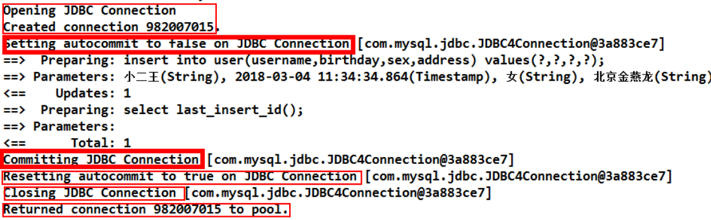
这是我们的 Connection 的整个变化过程,通过分析我们能够发现之前的 CUD 操作过程中,我们都要手动进行事务的提交,原因是setAutoCommit()方法,在执行时它的值被设置为 false 了,所以我们在 CUD 操作中,必须通过sqlSession.commit()方法来执行提交操作。
Mybatis 自动提交事务的设置
通过上面的研究和分析,现在我们一起思考,为什么 CUD 过程中必须使用 sqlSession.commit()提交事务?主要原因就是在连接池中取出的连接,都会将调用 connection.setAutoCommit(false)方法,这样我们就必须使用 sqlSession.commit()方法,相当于使用了 JDBC 中的connection.commit()方法实现事务提交。
明白这一点后,我们现在一起尝试不进行手动提交,一样实现 CUD 操作。
@Before//在测试方法执行之前执行
public void init()throws Exception {
//1.读取配置文件
in = Resources.getResourceAsStream("SqlMapConfig.xml");
//2.创建构建者对象
SqlSessionFactoryBuilder builder = new SqlSessionFactoryBuilder();
//3.创建 SqlSession 工厂对象
factory = builder.build(in);
//4.创建 SqlSession 对象
session = factory.openSession(true);
//5.创建 Dao 的代理对象
userDao = session.getMapper(IUserDao.class);
}
@After//在测试方法执行完成之后执行
public void destroy() throws Exception{
//7.释放资源
session.close();
in.close();
}所对应的DefaultSqlSessionFactory 类的源代码:
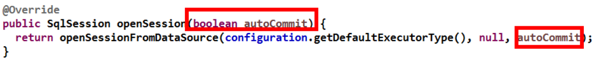
运行的结果如下:
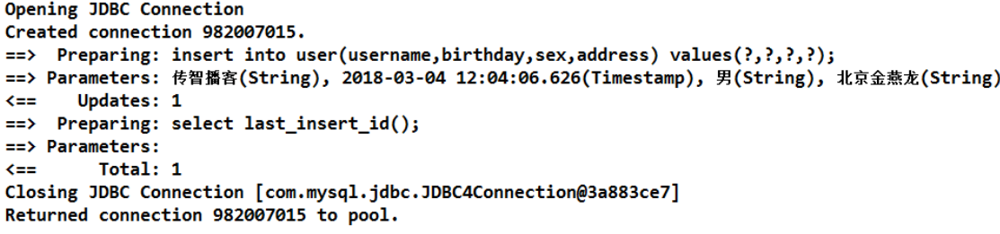
我们发现,此时事务就设置为自动提交了,同样可以实现 CUD 操作时记录的保存。虽然这也是一种方式,但就编程而言,设置为自动提交方式为 false 再根据情况决定是否进行提交,这种方式更常用。因为我们可以根据业务情况来决定提交是否进行提交。